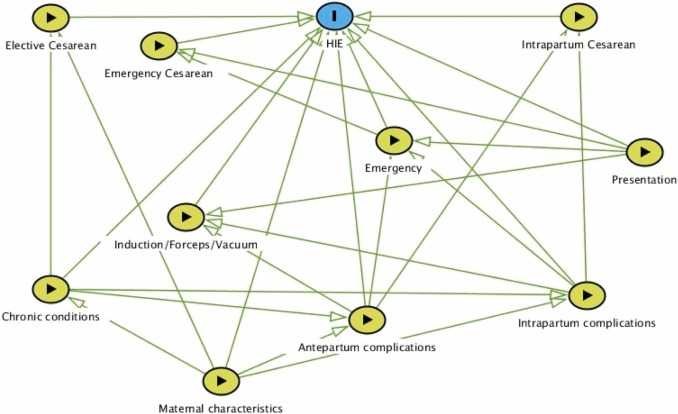

Obstetric studies identifying risk factors with treatment paradox#
Executive summary
This page summarises examples of studies in obstetrics that have attempted to account for the treatment paradox, whilst analysing the association of various risk factors with an outcome.
Treatment as predictor - Thangaratinam et al. 2017; Odd et al. 2017; Leith et al. 2023;
Inverse probability of treatment weighting - Cooray et al. 2020;
Treatment as outcome - Cooray et al. 2020; Syngelaki et al. 2022;
Exclusion of treated - Cooray et al. 2020; Steer et al. 2023;
Thangaratinam et al. 2017#
Study: Development and validation of Prediction models for Risks of complications in Early-onset Pre-eclampsia.[Thangaratinam et al. 2017]
Aim: Predict adverse maternal outcomes outcomes in patients with early-onset pre-eclampsia
Methods:
Survival model ‘censored at 34 completed weeks’ gestation to predict the risk over time at daily intervals from diagnosis of early onset pre-eclampsia’
Logistic regression model ‘to predict the overall risk of maternal complications by postnatal discharge’
Account for treatment paradox by including treatment as predictor: baseline treatment with hypertensives and magnesium sulfate as predictors in both models [Thangaratinam et al. 2017]
Outcomes (as determined by indepenent panel of experts, ranking importance of outcomes, with components selected by Delphic consensus):
Primary: Maternal complication = maternal death, neurological, hepatic, cardiorespiratory, renal or haematological complications, or delivery before 34 weeks.
Secondary: Perinal complications by discharge = perinatal or infant mortality, bronchopulmonary dysplasia, necrotising enterecolitis, intraventricular haemorrhage, cystic periventricular leukomalacia, retionpathy of prematury, or HIE.
In a 2016 commentary in the British Journal of Obstetrics and Gynaecology (BJOG)[Cheong-See et al. 2016], they examined this model to identify what made it succesful and highlighted:
Large sample size
Standardisation of treatment or intervention
Consideration of the initiation of treatment being an outcome itself - i.e. “when starting a treatment is likely to prevent an adverse outcome, those who received the treatment could also be considered to have experienced the outcome”[Murphy et al. 2019]
Cooray et al. 2020#
Study: Protocol for development and validation of a clinical prediction model for adverse pregnancy outcomes in women with gestational diabetes [Cooray et al. 2020]
Aim: Predicting adverse outcomes (neonatal and maternal) in women with gestational diabetes (in presence of treatment paradox from insulin)
Outcomes (as determined by study steering committee, considering outcomes from several sources):
Composite of: hypertensive disorders of pregnancy, LGA, neonatal hypoglycaemia, shoulder dystocia, fetal death, neonatal death, bone fracture, nerve palsy
Method:
‘Sensitivity analyses to address the confounding effect of insulin treatment on predictor-outcome associations and hence the performance of the prediction model. These are:
IPTW - propensity of being treated with insulin based on pre-treatment characteristics
Insulin as component of outcome
Exclude insulin treatment cases
Multinomial regression for combinations of composite outcome of adverse pregnancy outcome and insulin treatment
The three possible results from the sensitivity analysis to evaluate the effect of including the decision to treat with insulin will be informative and may be interpreted as follows. If the sensitivity analyses find that the inclusion of the decision to treat with insulin within the outcome:
Positively affects model performance, then this suggests the presence of treatment paradox, that is, pregnancy complications are more likely to occur in the absence of insulin therapy;
Has no significant effect on model performance then this suggests that the model is robust with predictive performance not affected by the decision to treat, that is, the absolute risk of adverse pregnancy outcomes for an individual woman with GDM is not affected by insulin therapy;
Negatively affects model performance, then this would suggest that adverse pregnancy outcomes are more likely to occur in women treated with insulin, and thus imply more ‘severe’ GDM or a harmful effect for this treatment. (unlikely)
Other notes:
Addressing the treatment paradox (in this case with insulin) is a challenge in prediction modelling studies. The traditional approach has been to accept predictions in the context of current care. However, this does not remove the possibility that a potentially useful model may appear to perform poorly due to the confounding effect of the judicious application of effective interventions to individual’s whom clinicians subjectively assess to be at high risk of the outcome of interest.
Two solutions to address the problem of treatment paradox in prediction modelling studies have been advocated.50
First, the use of treatments suspected to confound the predictor-outcome relationship can be set as a predictor in the final model.
Second, the use of such effective treatments can be included within a composite outcome to be predicted.
For this study, both approaches were considered but deemed inappropriate. For the former, the inclusion of the requirement for insulin therapy as a predictor is not possible as this information is not available at the intended moment of prediction—the time of GDM diagnosis, usually around 24 to 28 weeks gestation. For the later, inclusion of the requirement for insulin therapy within the composite outcome would impair its interpretability as this outcome occurs at a significantly higher frequency than the other component outcomes (31% vs approximately 10% based on our prior work).44 This is likely to lead to a less meaningful composite that is primarily driven by the need for insulin therapy and no longer predicts what we want (adverse pregnancy outcomes). While many promising novel approaches have been proposed in the statistical literature, such as multistate modelling or marginal structural models for ‘treatment drop-ins’,51 52 at time of writing all are primarily based on empirical data and are yet to be applied to clinical prediction problems.
Odd et al. 2017#
Study: Hypoxic-ischemic brain injury: Planned delivery before intrapartum events [Odd et al. 2017]
Aim: Predict risk of HIE
Dataset: Avon Longitudinal Study of Parents and Children (ALSPAC) - cohort of 14000+ infants around Bristol born 1991-92.
Outcome: Need resuscitation and then have symptoms of NE.
Predictors:
‘Booking factors (maternal age, smoking, primiparity, previous lower segment caesarean section (LSCS), multiple births)
Antenatal factors (preeclampsia, gestational diabetes, prelabor abruption, placenta previa, oligohydramnios, polyhydramnios, threatened preterm labor, gender, concerns of IUGR infant)
Labor factors (induction of labor, pre-labor rupture of membranes, planned LSCS (i.e. lower segment caesarean section - so inclusion of treatment as predictor), gestation at birth, presentation, prelabor breech, breech delivery, duration of ruptured membranes)’
Model: Logistic regression.
Develop model in half the data
Test model in other half of the data
Then ‘to give some indication of possible avoidable disease, the proportion of infants with HIE, potentially avoidable by earlier delivery was estimated by assuming that elective delivery would remove intrapartum risk of HIE for those infants undelivered at this point. This was calculated for the whole cohort and for each antenatal risk strata at each gestational age between 36 and 40 weeks. The a-priori clinical cut-off used was “clinical intervention” (e.g. elective LSCS) at 39 weeks’
Leith et al. 2023#
Study: A predictive model for perinatal hypoxic ischemic encephalopathy using linked maternal and neonatal hospital data. [Leith et al. 2023]
Aim: Predict HIE - building on [Odd et al. 2017], but with a model in a larger dataset of births. They describe Odd et al. 2017 as a paer in which “researchers in England published the first predictive model accounting for multiple risk factors to estimate the probability of an individual HIE injury”.
Method: They include the intervention as a predictor in the model, but not as a way to enable causal inferences. They state that “drawing causal inferences should be done with caution. For instance, some factors were found to be significantly protective against HIE injury, such as malpresentation and uterine inertia, which logically should not decrease risk. It is likely that such conditions heighten clinical awareness of risk, thus resulting in more timely initiation of protective interventions.”
Dataset: US dataset of 836,216 births - of which, 376 (0.00045%) had a diagnosis of HIE (0.45 per 1000 live births). (They incorrectly state “0.045%”).
Their DAG: Due to the large number of factors in the final model, to make the graph easier to read we have combined similar factors into groups as follows:
Maternal characteristics: age, race, payer, metropolitan residence, history of stillbirth, tobacco use.
Chronic conditions: diabetes, hypertension, total number of chronic conditions.
Antepartum complications: decreased fetal movement, polyhydramnios, amniotic fluid infection, intrauterine acidosis, cord compression, placental infarct.
Intrapartum complications: septicemia, hypertonic contractions, uterine inertia, prolonged 2nd stage.
Presentation: malpresentation, breech delivery, shoulder dystocia.
Emergency: sentinel event, fetal heart rate abnormalities.
They use a logistic regression model to predict cases of HIE (i.e. presence of HIE diagnostic code). The model includes a range of maternal, antepartum and intrapartum characteristics - including the delivery type (with predictors including forceps, vacuum, elective C-section, emergency C-section, and intrapartum C-section).

Steer et al. 2023#
Study: Risk factors for a serious adverse outcome in neonates: a retrospective cohort study of vaginal births. [Steer et al. 2023]
Aim: Identify risk factors for adverse neonatal outcomes:
5-minute Apgar <7 - as it is proxy that indicates higher risk of HIE, CP and death
Composite of:
(i) 5-minute Apgar
(ii) Neonatal resuscitation by intubation and positive pressure ventilation - as its a major intervention requiring expert input, particularly relevant for MSAF
(iii) Perinatal death - as its the most important outcome to avoid
Method: Exclusion of mothers who delivery by caesarean (i.e. only include vaginal deliveries) - as when included, emergency caesarean is a “major effect modifier and itself associated significantly with different maternal and labour risk factors”
Syngelaki et al. 2022#
Study: Competing-risks model for pre-eclampsia and adverse pregnancy outcomes. [Syngelaki et al. 2022]
Aim: Estimate risk of delivery with pre-eclampsia
Methods: Competing-risks model, looking at incidence and relative risk of adverse outcomes in patient groups stratified by estimated risk of delivery with PE.
Delivery by elective or emergency caesarean section is an outcome - alongside pre-eclampsia, gestational hypertension, small-for-gestational-age, stillbirth, neonatal death and neonatal unit admission for at least 48 hours.
There is another paper that is quite relevant to this - [Wright et al. 2020] - The competing risk approach for prediction of preeclampsia
Other studies#
Williams et al. 2018#
Study: Directed acyclic graphs: a tool for causal studies in paediatrics. [Williams et al. 2018]
This study is a slight exception as it is just explaining the likely existence of the treatment paradox in a previous study.
Pre-eclampsia is hypothesised to cause cerebral palsy. It is also associated with higher risk of medically indicated (ordered by the physician) pre-term birth - and pre-term birth is also associated with higher risk of cerebral palsy. Steve Thornton comments that “pre-eclampsia leads to pre-term birth because women are induced or delivered early because of the pre-eclampsia to prevent it getting worse”.
You could adjust for pre-term birth or gestational age like a confounding variable. However, pre-term birth is a intermediate between pre-eclampsia and cerebral palsy, and not a common cause of both. Therefore, this adjustment (overadjustment) takes away from the detrimental effect of pre-elcampsia, mediated through pre-term birth - attenuating the effect or event reversing it.
In an early study, pre-eclampsia was found to be protective in pre-term infants and detrimental for those born later. However, we expect pre-eclampsia to be detrimental for all infants. This finding could be as the analysis seperated out pre-term births and later births, closing the causal path between pre-eclampsia and cerebral palsy via pre-term birth.[Williams et al. 2018]
However, it’s likely more complex. In a more realistic directed acyclic graph (DAG) below, chorioamnionitis is added. It is another cause of pre-term birth and cerebral palsy.
Gestational age, as a shared effect of pre-eclampsia and chorioamnionitis, acts as a collider. This is the opposite of a confounder (where a common cause of exposure and outcome is not controlled for) - instead, a collider is when the exposure and outcome (or factors causing) each influence a common third variable, and that variable is controlled for in the design. Controlling for a collider can result in a distorted association betwene the exposure and outcome, when actually none exists.
In this model, if we look in a group of pre-term infants:
Babies born to mothers with pre-eclampsia will be less likely to have chorioamnionitis and vice versa
The effect of pre-eclampsia will be compared with the effect of chorioamnionitis on cerebral palsy, and will falsy appear to be protective - the estimated direct causal effect of pre-eclampsia on the outcome will be biased (through the effect of chorioamnionitis)
Hence, although widely used, conditioning on gestational at birth in studies of prenatal exposures and their relationship to postnatal outcomes may not reduce but actually lead to bias through overadjustment and faulty comparisons, and generate counterintuitive results and apparent changes of effect in different groups of patients.[Williams et al. 2018]